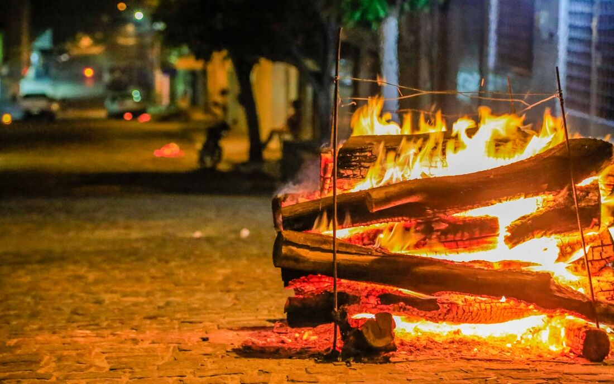

A Origem da Festa Junina
As Festas Juninas têm origem em celebrações antigas trazidas pelos colonizadores portugueses, que juntaram elementos religiosos, culturais e tradições populares.
Com o tempo, a festa se misturou às culturas indígenas e africanas, ganhando música, danças, comidas típicas e símbolos próprios — especialmente no Nordeste.
Hoje, o São João é sinônimo de alegria, união e muita celebração que atravessa gerações.

A fogueira é um dos símbolos centrais.